Valve Body: Description and Operation
Control Valve Description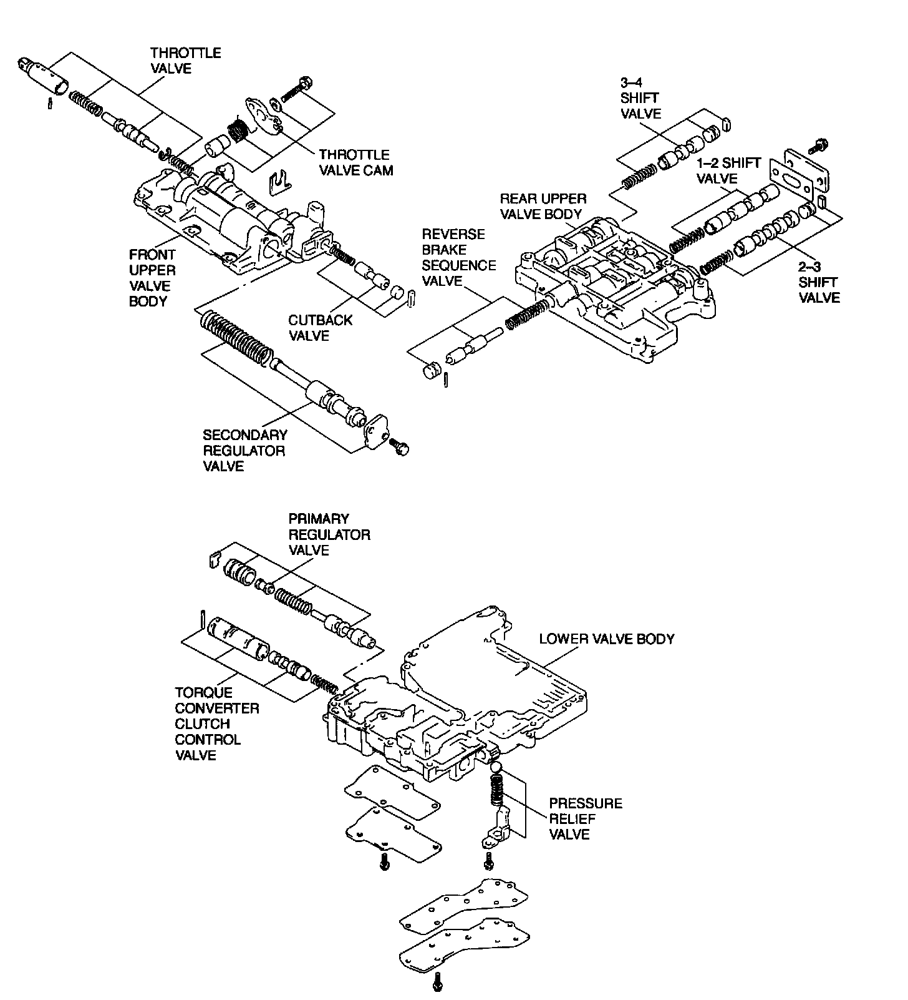
Control Valve Component Location
Manual Valve
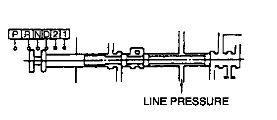
- The manual valve switches the hydraulic paths for the line pressure. It is linked to the selector lever beside the driver's seat and it switches the ranges P, R, N, D, 2, and 1 according to the lever positions.
Primary Regulator Valve
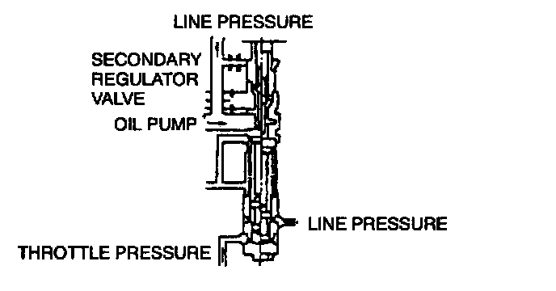
- The primary regulator valve automatically adjusts the hydraulic pressure to each element to the most suitable level according to the vehicle speed and engine load (throttle valve opening). Consequently, it prevents the oil pump from losing power unnecessarily
Secondary Regulator Valve
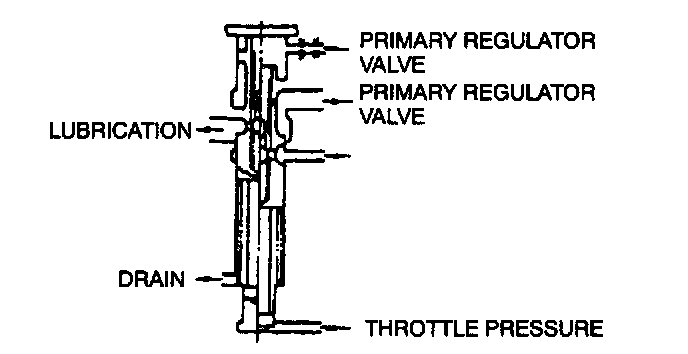
- The secondary regulator valve adjusts suitable converter pressure, lubrication hydraulic pressure, and cooler pressure according to the vehicle speed and the engine load (throttle valve opening).
Intermediate Coast Modulator Valve
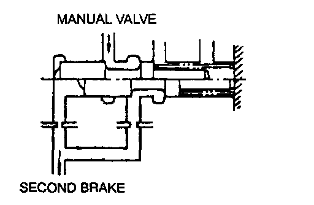
- The intermediate coast modulator valve adjusts the line pressure of the second coast brake piston to reduce the engine brake shock when the selector lever is in second gear, at 2 range.
Low Coast Modulator Valve
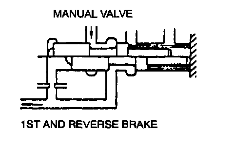
- The low coast modulator valve adjusts the line pressure which acts on this valve to the low hydraulic pressure (low modulator pressure) when the valve is at 1 range. The pressure goes through the low coast shift valve and operates on the 1st and reverse brake to reduce the brake shock.
Reverse Brake Sequence Valve
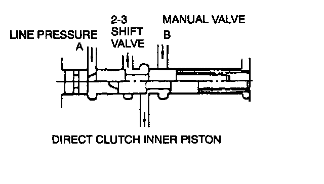
- The reverse brake sequence valve reduces the shock when the selector lever is shifted to R position, and it is controlled by the line pressure which acts on the direct clutch outer piston. The line pressure acts on both circuits A and B at the same time when the selector lever is at R position. The outer piston operates after the inner piston, since circuit B will not open until hydraulic pressure A on this valve or the line pressure on the inner piston overcomes the valve spring tension.
- When the selector lever is in third gear at D range, only the outer piston can operate since circuit B is closed by the manual valve.
Cutback Valve
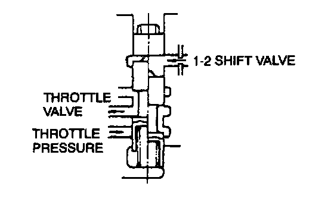
- The cutback valve adjusts the cutback pressure which acts on the throttle valve. The cutback valve operates with the line pressure from the 1-2 shift valve and the throttle pressure. The cutback pressure's effect on the throttle valve reduces the throttle pressure and prevents the oil pump from losing power unnecessarily.
Accumulator
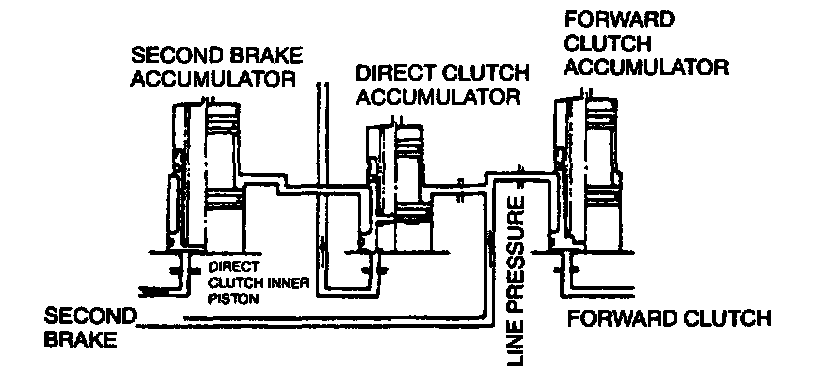
- Accumulators are set at each location to reduce shift shock generated when the forward clutch, the direct clutch, or second brake is in operation. There is an area difference between the working side and the back pressure side of the accumulator piston; the working side area is larger than the back pressure side. The line pressure acts on the back pressure side at all times to push down the piston. When the passage to the working side opens and the line pressure is in operation, the piston is gradually pushed up and reduces shift shock.
Throttle Valve
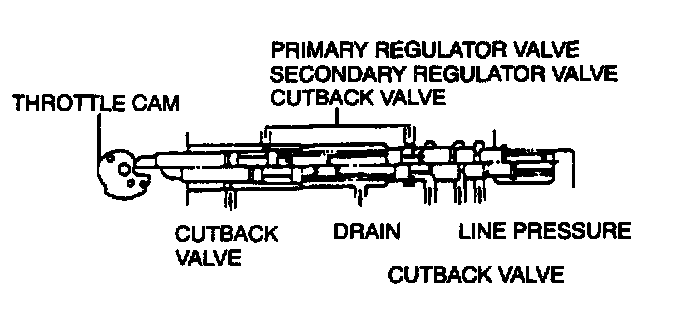
- The throttle valve gets the throttle pressure to correspond to acceleration or the engine load. The throttle cable Interlocked with the accelerator pedal transmits the pressure to the throttle cam, and the throttle cam pushes the downshift plug to shift the throttle valve by compressing the two springs in front and behind. Then the line pressure passage opens and throttle pressure is generated. However, the throttle pressure also operates behind the valve, and the throttle valve is pushed back because of the hydraulic pressure. The throttle valve closes the line pressure passage, with the tension of the two springs in the downshift plug position balanced.
- Consequently, the throttle pressure is regulated by the throttle valve opening angles. The hydraulic pressure adjusts the primary regulator valve and the secondary regulator valve to relieve the line pressure.
1-2 Shift Valve
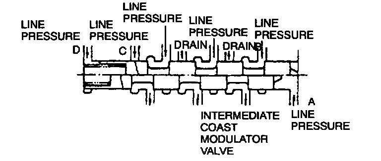
- 1-2 shift valve automatically controls shifts between first and second gear by switching shift solenoid B on/off.
- In first gear position, with shift solenoid B off, line pressure from passage A acts on the valve to shift, and the passage to second brake is closed. With shift solenoid B on, passage A line pressure is drained, the valve shifts with the spring tension, the passage to second brake is opened, and the position turns to second gear.
- In 2 or 1 range, passage B line pressure acts on second coast brake through the intermediate modulator valve, only when the valve is in second position. This enables the engine brake to operate in second gear. In 1 range, passage C pressure acts on reverse brake only when the valve is in first position. This enables the engine brake to operate in first gear.
2-3 Shift Valve
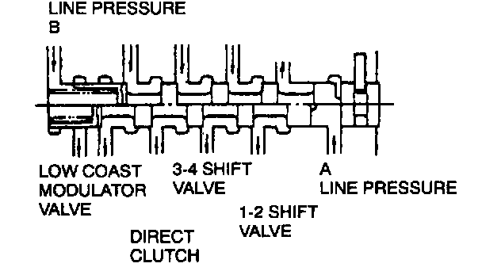
- The 2-3 shift valve automatically controls shifts between second and third gear by switching shift solenoid A on/off.
- In second gear position, with shift solenoid A on, passage A line pressure is drained and the passage to the direct clutch is closed. The passage A line pressure causes the valve to shift by switching shift solenoid A off, and the passage to the direct clutch is opened, engaging third gear.
3-4 Shift Valve
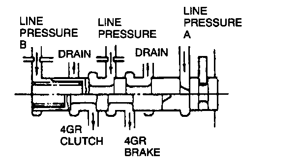
- The 3-4 shift valve automatically controls shifts between third gear and 4GR gear by switching shift solenoid B on/off.
- In third gear position, with shift solenoid B on, passage A line pressure is drained. This allows the 4GR clutch passage to be opened and the 4GR brake passage to be closed. With shift solenoid B off, the passage A line pressure causes the valve to shift. This allows 4GR clutch passage to be closed and the 4GR brake passage to be opened, engaging 4GR gear.
- Also in first gear position, shift solenoid B is off and the passage A line pressure is on. However, the passages to the 4GR clutch and to the 4GR brake are not shifted, because passage B line pressure does not allow the valve to shift.